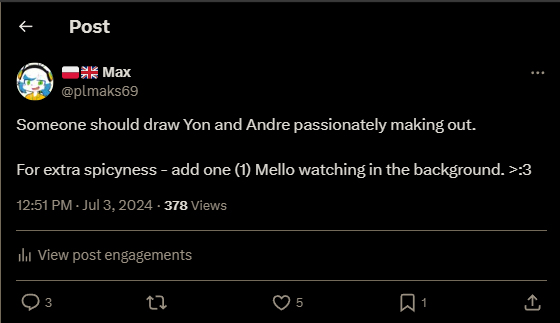
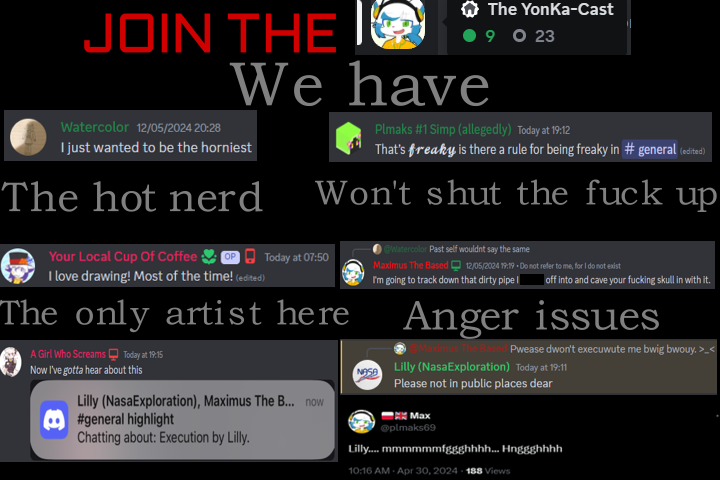

This is where I upload all my shitposts (probably higher quality than Twitter), podcast episodes, and other random shit I think of making.
-
Stats:
- Subscribers: [placeholder]
- Videos: [placeholder]
- Lifetime views: [placeholder]
- Channel age: [placeholder]
Anyways, in case you were curious, this is my favourite vid:
Again, this is where I upload all of my shitposts, but also do other shit in general.
-
Stats:
- Followers: [placeholder]
- Following: [placeholder]
- Tweets: [placeholder]
- Twitter arguments I caused: 2
Anyways, in case you were curious, this is obviously my best tweet (Twitter embeds are fucking shit):
Yes, I have an account in the hive of scum and villainy. No other way to describe this shithole. I do also have a YonKaGor fan Discord server
-
Stats:
- Members: [placeholder]
- Nitro boosts: [placeholder]
- Mods: 5 (and not hiring!)
- Server age: [placeholder]
And in case you wanted to join the incarnation of Hell itself:
